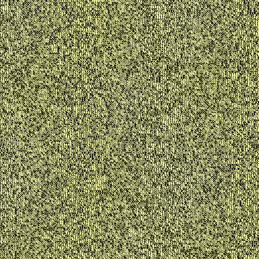
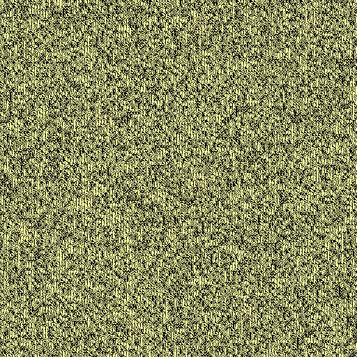

Read-only snapshot of the PiLens gallery, exported 2026-11-06 16:21. Code and how to run it yourself: github.com/fsaritome/PiLens.
glyph on e, base 10, n = 100,000
Verdict: indistinguishable from random controls. p_maxT = 0.511; classifier accuracy 0.53 (chance 0.5), p = 0.305; p_lens = 0.611; q (BH over 7 lens(es) in this run) = 0.922; 500 controls.


Does this lens show anything interesting?
0👍 0👎
| metric | e | controls mean ± sd | z | p (two-sided) |
|---|---|---|---|---|
| fft_peak_log10 | 3.5238 | 3.4965 ± 0.018 | +1.52 | 0.112 |
| largest_component_frac | 0.0077 | 0.0101 ± 0.003 | -0.92 | 0.277 |
| fft_slope | -0.1644 | -0.1842 ± 0.022 | +0.92 | 0.339 |
| fg_fraction | 0.5447 | 0.5438 ± 0.001 | +0.65 | 0.493 |
| img_entropy_bits | 0.9942 | 0.9944 ± 0.000336 | -0.64 | 0.501 |
| fft_flatness | 0.4783 | 0.4776 ± 0.003 | +0.28 | 0.788 |
| mean_component_size | 10.9573 | 10.9342 ± 0.179 | +0.13 | 0.842 |
| components_per_tile | 0.7953 | 0.7959 ± 0.011 | -0.05 | 0.962 |
| img_compress_ratio | 0.3135 | 0.3135 ± 0.000619 | -0.02 | 0.994 |
Params: {"width": 128, "size": 4, "style": "random", "glyph_seed": 0}. Saved 2026-11-06 09:27:30,
2s.